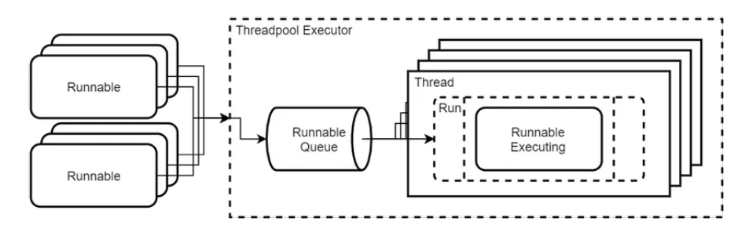

Java Multithreading
Giới thiệu
Trong thế giới hiện đại, tốc độ và hiệu năng là yếu tố sống còn của ứng dụng.
Java Multithreading cho phép bạn thực thi nhiều tác vụ đồng thời (song song) trong cùng một chương trình,
giúp tận dụng tối đa tài nguyên CPU và cải thiện trải nghiệm người dùng.
Trong bài viết này, chúng ta sẽ tìm hiểu những khái niệm then chốt: Thread, Runnable Interface,
Synchronization và Concurrent Programming trong Java — cùng các ví dụ minh họa dễ hiểu.
1. Thread là gì?
Một Thread (luồng) là đơn vị nhỏ nhất của tiến trình (process) có thể được CPU xử lý độc lập.
Khi bạn chạy một chương trình Java, mặc định luôn có ít nhất một luồng — gọi là main thread.

Mỗi luồng có thể thực thi một nhiệm vụ riêng biệt, và nhiều luồng có thể chạy đồng thời trên các lõi CPU khác nhau. Điều này giúp chương trình của bạn phản hồi nhanh hơn, đặc biệt khi xử lý các tác vụ nặng như I/O, tính toán phức tạp, hay giao tiếp mạng.
Để tạo và quản lý luồng trong Java, bạn có thể sử dụng lớp Thread hoặc triển khai Runnable interface.
Tại một thời điểm trong quá trình thực thi, Main thread khởi tạo và gọi phương thức start() để tạo ra Worker thread (luồng phụ).
Kể từ đó, cả hai luồng chạy song song, mỗi luồng đảm nhiệm một phần công việc riêng biệt
Bạn có thể tạo luồng mới bằng hai cách phổ biến:
- Kế thừa lớp
Threadvà override phương thứcrun(). - Triển khai
Runnable interfacevà truyền vào đối tượng Thread.
class MyThread extends Thread {
public void run() {
for (int i = 1; i <= 5; i++) {
System.out.println(Thread.currentThread().getName() + " đang chạy: " + i);
}
}
}
public class ThreadDemo {
public static void main(String[] args) {
MyThread t1 = new MyThread();
MyThread t2 = new MyThread();
t1.start();
t2.start();
}
}
👉 Mỗi khi bạn gọi start(), Java tạo ra một luồng riêng biệt để thực thi phương thức run().
2. Sử dụng Runnable Interface
Cách khuyến khích trong Java hiện đại là dùng Runnable interface, vì nó tách biệt logic chạy với cơ chế tạo luồng.
class PrintTask implements Runnable {
public void run() {
for (int i = 1; i <= 3; i++) {
System.out.println(Thread.currentThread().getName() + " in số: " + i);
}
}
}
public class RunnableExample {
public static void main(String[] args) {
Thread t1 = new Thread(new PrintTask(), "Thread-1");
Thread t2 = new Thread(new PrintTask(), "Thread-2");
t1.start();
t2.start();
}
}👉 Cách này giúp code dễ tái sử dụng, linh hoạt hơn, đặc biệt khi bạn dùng Executor Framework hoặc thread pool.
3. Synchronization – Tránh xung đột dữ liệu
Khi nhiều luồng cùng truy cập và chỉnh sửa một tài nguyên (ví dụ biến dùng chung), có thể xảy ra xung đột (race condition).
Java cung cấp từ khóa synchronized để đảm bảo chỉ một luồng được truy cập tài nguyên tại một thời điểm.
class Counter {
private int count = 0;
public synchronized void increment() {
count++;
}
public int getCount() {
return count;
}
}
public class SyncExample {
public static void main(String[] args) throws InterruptedException {
Counter counter = new Counter();
Runnable task = () -> {
for (int i = 0; i < 1000; i++) {
counter.increment();
}
};
Thread t1 = new Thread(task);
Thread t2 = new Thread(task);
t1.start(); t2.start();
t1.join(); t2.join();
System.out.println("Kết quả cuối cùng: " + counter.getCount());
}
}
👉 Từ khóa synchronized giúp tránh lỗi dữ liệu không nhất quán trong môi trường đa luồng.
4. Concurrent Programming – Lập trình song song hiệu quả
Khi chương trình có nhiều tác vụ cần chạy đồng thời (ví dụ: đọc file, xử lý dữ liệu, gọi API), bạn có thể dùng **Executor Framework** để quản lý luồng thay vì tự tạo từng Thread thủ công.
import java.util.concurrent.*;
public class ExecutorDemo {
public static void main(String[] args) {
ExecutorService executor = Executors.newFixedThreadPool(3);
for (int i = 1; i <= 5; i++) {
int taskId = i;
executor.execute(() -> {
System.out.println("Đang xử lý tác vụ " + taskId + " bởi " + Thread.currentThread().getName());
});
}
executor.shutdown();
}
}👉 Executor Framework giúp tái sử dụng luồng, giảm chi phí tạo mới và tối ưu hiệu suất.
Hình trên mô tả cơ chế hoạt động của Executor Framework trong Java – một công cụ mạnh mẽ giúp quản lý và tối ưu việc chạy song song (concurrent programming).
Khi một luồng hoàn thành công việc, nó không bị hủy, mà được tái sử dụng cho tác vụ tiếp theo trong hàng đợi.
Cách làm này giúp giảm chi phí khởi tạo luồng mới, tăng hiệu suất, và tối ưu việc xử lý đồng thời trong các ứng dụng lớn.
Nói cách khác, Executor Framework đóng vai trò “bộ điều phối thông minh”: nhận nhiệm vụ, xếp hàng chờ, phân phối cho các luồng sẵn có, và đảm bảo mọi tác vụ được thực thi hiệu quả mà không gây quá tải tài nguyên hệ thống.
“Concurrency không chỉ là làm nhiều việc cùng lúc — mà là tối ưu cách CPU chia sẻ thời gian giữa các tác vụ.”
5. Một ví dụ hoàn chỉnh
Dưới đây là chương trình kết hợp nhiều kỹ thuật multithreading trong một ví dụ thực tế: xử lý danh sách công việc song song.
import java.util.*;
import java.util.concurrent.*;
public class TaskManager {
public static void main(String[] args) throws InterruptedException {
List<String> tasks = Arrays.asList("Download", "Parse Data", "Save File", "Upload");
ExecutorService executor = Executors.newFixedThreadPool(2);
for (String task : tasks) {
executor.submit(() -> {
System.out.println(Thread.currentThread().getName() + " đang xử lý: " + task);
try { Thread.sleep(1000); } catch (InterruptedException ignored) {}
System.out.println(task + " ✅ hoàn tất!");
});
}
executor.shutdown();
executor.awaitTermination(5, TimeUnit.SECONDS);
System.out.println("👉 Tất cả tác vụ đã hoàn thành!");
}
}6. Best Practices khi lập trình đa luồng
- Luôn dùng
ExecutorServicethay vì tạo Thread thủ công. - Tránh chia sẻ biến toàn cục — nếu cần, dùng
synchronizedhoặc lớp thread-safe nhưAtomicInteger. - Dùng
join()để đồng bộ kết quả khi cần chờ luồng hoàn tất. - Luôn gọi
shutdown()sau khi dùng Executor để giải phóng tài nguyên. - Dùng thư viện
java.util.concurrentđể xử lý các tác vụ phức tạp (BlockingQueue, Future, Semaphore, ...).
Tổng kết
Multithreading là công cụ mạnh mẽ giúp ứng dụng Java trở nên nhanh hơn, phản hồi tốt hơn và tận dụng tối đa phần cứng.
Nắm vững các khái niệm như Thread, Runnable, Synchronization và Concurrent Framework sẽ giúp bạn xử lý các bài toán thực tế hiệu quả.
👉 Bắt đầu bằng những ví dụ nhỏ — rồi dần xây dựng ứng dụng có nhiều tác vụ chạy đồng thời để cảm nhận sức mạnh thực sự của Java Multithreading!
“Code tốt không chỉ chạy đúng — mà còn chạy nhanh và hiệu quả nhờ sức mạnh của đa luồng.”